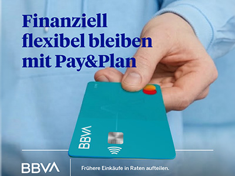
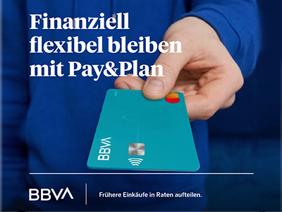

El equipo necesitaba producir múltiples variantes creativas para campañas paid en Meta, con tiempos ajustados y presión constante por mejorar métricas de adquisición.
The team needed to produce multiple creative variants for paid campaigns on Meta, with tight timelines and constant pressure to improve acquisition metrics.
El reto no era solo generar más piezas, sino construir un sistema que permitiera escalar sin perder control estratégico ni calidad.
The challenge was not just to generate more pieces, but to build a system that allowed scaling without losing strategic control or quality.
01
Analicé campañas previas, identificando patrones de rendimiento, fricciones creativas y oportunidades de optimización.
I analyzed previous campaigns, identifying performance patterns, creative friction points, and optimization opportunities.
02
Diseñé una lógica modular de variaciones (mensaje, visual, formato) que permitiera testear hipótesis de forma estructurada.
I designed a modular variation logic (message, visual, format) that allowed testing hypotheses in a structured way.
03
Implementé herramientas de IA generativa para acelerar producción y exploración visual, manteniendo supervisión estratégica y coherencia de marca.
I implemented generative AI tools to accelerate production and visual exploration, maintaining strategic oversight and brand coherence.
04
Ajusté creatividades en función de métricas clave (CTR, CPC, conversión), optimizando continuamente el sistema.
I adjusted creatives based on key metrics (CTR, CPC, conversion), continuously optimizing the system.


La IA no se utilizó como generador masivo de contenido, sino como acelerador creativo dentro de un marco definido. La estrategia y el criterio creativo permanecieron como eje central.
AI was not used as a mass content generator, but as a creative accelerator within a defined framework. Strategy and creative judgment remained the central axis.
Reducción en coste por adquisición (CAC)
Reduction in cost per acquisition (CAC)
Aumento de la capacidad de producción creativa
Increase in creative production capacity
Reducción en coste por clic (CPC)
Reduction in cost per click (CPC)
Disminución de tiempos en la entrega de nuevas variantes
Decrease in time to deliver new variants
Nota: Resultados expresados en términos relativos por confidencialidad.
Note: Results expressed in relative terms for confidentiality.